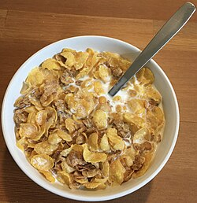

Home
A bowl of Cereal

Decription
Yes, this is not a joke. (Ok maybe it is) This recipe will teach you how to make the tried and true breakfast dish of all time, a bowl of cereal. Take it from an expert cereal consumer of 20+ years, nothing will ever beat a bowl of cereal in the morning.
Ingredients
- ANY cereal of your choosing.
- Enough milk to fill a cereal bowl.
- I prefer low fat cow milk but you can substitute with any milk here. (Just don't be that person that uses water)
- (Optional) Some sort of small fruit like cranberries or banana slices.
Preparation
- Gather all the ingredients.
- Grab your cereal box and fill a cereal bowl up to approximately ⅔ with cereal. It is of CRITICAL IMPORTANCE that the cereal gets poured first.
- Fill the bowl with enough milk so that the top grains of cereal begin lightly floating on the milk.
- Add any additional fruits you'd like to add. Enjoy!